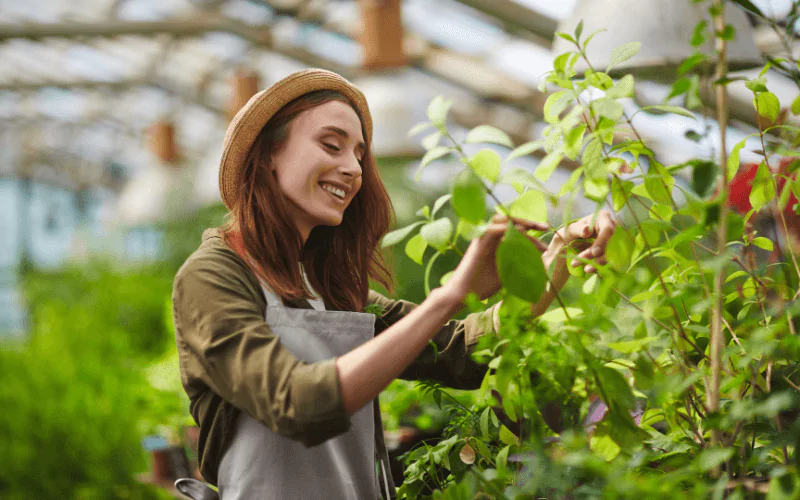
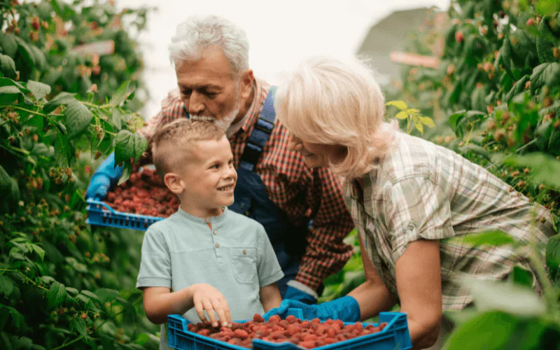

Bountiful Fresh Market
Farm fresh organic produce
Produce of the Week
Discover our Local Farms
Our produce comes from over 20 local farms throughout Southern California. We take pride in our homegrown produce and also in all the farmer's working hard to produce top quality organic produce. Check out a few of the local farms providing Southern California's finest produce.
Sunset Farms
Located just outside of Carlsbad, Sunset Farms is a 30 acre growing a variety of of crops, including vegetables, melons, berries, as well has free range chickens and eggs. This farm is a certified Organic farms under the USDA's National Organic Program.
Grant Family Farm
Grant Family farm has been growing a variety of berries for over 4 generations. This 24 arce farm is located in Sycamore Canyon. Farmer Jacob is dedicated to sustainablity, biodiversity, and biotic health for soils and our communities.
